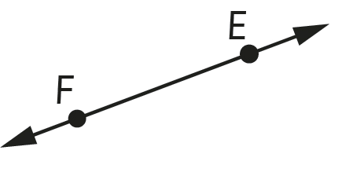
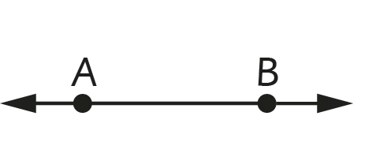
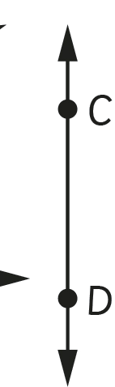
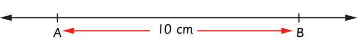
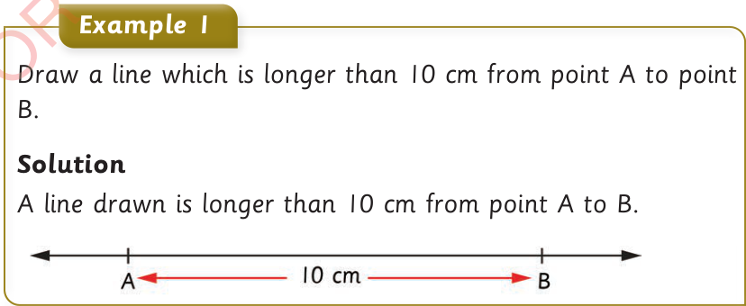

Activity 1: Locating points on a plane
1.
Use a pencil to locate five distinct points on a piece of paper.
2.
Name the points by using capital letters.
A line
A line is made of a set of points joined together, and extends on opposite sides infinitely. A line is often indicated by a symbol ↔ to show the infinite nature. A straight line can be denoted by any two distinct points on the line. The following figures show examples of straight lines.



Therefore, EF or FE represents a straight line EF or FE, respectively. Similarly, AB or BA and CD or DC are straight lines.
Example 1
Draw a line which is longer than 10 cm from point A to point B.
Solution
A line drawn is longer than 10 cm from point A to B.

